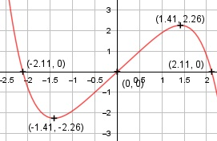

Aufgabe 69 f(x) = 2x - 0,1x5 f'(x) = 2 - 0,5x4, f''(x) = -2x3, f'''(x) = -6x2 Definitionsbereich: -∞ < x < ∞ Wertebereich: -∞ < f(x) < ∞ Asymptoten: - Symmetrie zur y-Achse bzw. zum Punkt (0|0): f(-x) = 2(-x) – 0,1(-x)5 f(-x) = -2x + 0,1x5 ≠ f(x) --> keine Achsensymmetrie -f(-x) = -(-2x + 0,1x5) -f(-x) = 2x - 0,1x5 = f(x) --> Punktsymmetrie nur ungerade Exponenten von x Nullstellen: f(x) = 0 2x - 0,1x5 = 0 x * (2 - 0,1x4) = 0 x1 = 0 2 - 0,1x4 = 0 |+0,1x4 0,1x4 = 2 |:0,1 x4 = 20 Substitution: z = x2 z2 = 20 |ⱱ z1,2 = ± 4,47 Rücksubstitution: x2 = 4,47 |ⱱ x1,2 = ± 2,11 x2 = - 4,47 --> keine weiteren Nullstellen N1(0|0), N2(2,11|0), N3(-2,11|0) Schnittpunkt mit der y-Achse: x = 0 f(0) = 2 * 0 - 0,1 * 05 = 0 Sy(0|0) Extrempunkte: f'(x) = 0 2 - 0,5x4 = 0 |+0,5x4 0,5x4 = 2 |:0,5 x4 = 4 Substitution: z = x2 z2 = 4 |ⱱ z1,2 = ± 2 Rücksubstitution: x2 = 2 |ⱱ x1,2 = ± 1,41 f(1,41) = 2 * 1,41 - 0,1 * 1,415 = 2,26 f(-1,41) = -2,26 wegen Punktsymmetrie x2 = -2 |ⱱ --> keine weiteren Lösungen f''(1,41) = - 2 * 1,413 < 0 --> Hochpunkt (1,41|2,26) f''(-1,41) = -2 * (-1,41)3 > 0 --> Tiefpunkt (-1,41|-2,26) Wendepunkte: f''(x) = -2x3 = 0 |:(-2) x3 = 0 | x = 0 f'''(0) = - 6 * 02 = 0 f''''(0) = - 12 * 0 = 0 f'''''(0) = - 12 ≠ 0 --> Grad der Ableitung ungerade --> Wendepunkt (0|0) Graph:
